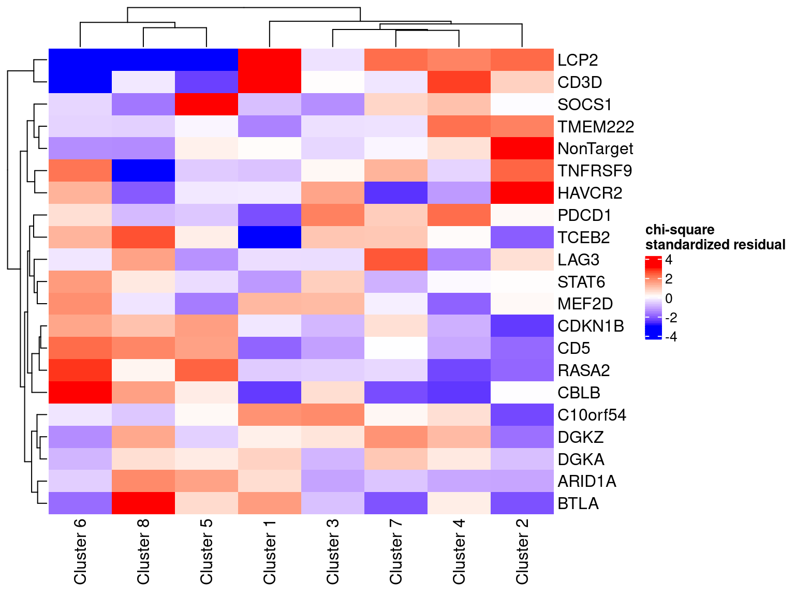
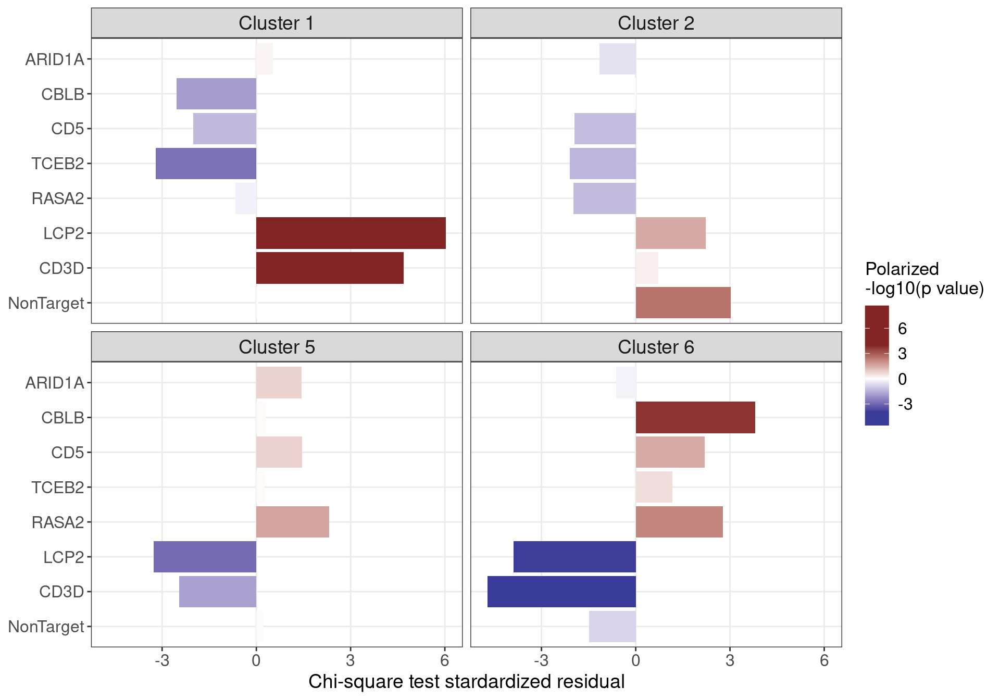

Source:
Genome-wide CRISPR Screens in Primary Human T Cells Reveal Key Regulators of Immune Function, GEO accession: GSE119450.
The following analysis follows a similar approach as used in this reference paper to generate Fig 4.
Perturbations:
CRISPR knock-out of 20 genes (2 gRNAs per gene) + 8 non-targeting gRNAs. Guide conditions were defined on the target gene level; target genes were either found to regulate T cell responses in the genome-wide screens, or known checkpoint genes.
Guide RNAs were introduced into T cells through a novel procedure called sgRNA lentiviral infection with Cas9 protein electroporation (SLICE).
Cells:
Primary human CD8+ T cells from two healthy donors, with and without T cell receptor (TCR) stimulation.
All cells were pooled together into 1 analysis.
There are 24955 cells with a single type of gRNA readout using the quality control criteria of % mitochondria gene expression < 10 and number of unique gene count > 500.
Gene expressions were normalized as log(count per \(10^4\) + 1), and then scaled.
Library size and mitochondria percentage were corrected for, while batch effect was not.
Top 1000 most variable genes were used to perform PCA, and the first 30 PCs were used to perform UMAP.
Donors and stimulation status:
Clustering of cells: Modularity Optimizer version 1.3.0 by Ludo Waltman and Nees Jan van Eck
Number of nodes: 24955 Number of edges: 745733
Running Louvain algorithm... Maximum modularity in 10 random starts: 0.8667 Number of communities: 8 Elapsed time: 4 seconds
Expression patterns of marker genes:
activation state (IL7R, CCR7), cell cycle (MKI67), and effector function (GZMB) in the reference paper.
Cluster 1, 2 and 3: resting cell states
Cluste 5 and 6: proliferation

Selected clusters and gRNA targets:
